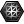

 Mesh parameter
Component Index > Params > Geometry > Mesh parameter
Represents a collection of Mesh geometry. Meshes in Rhino consist solely of triangles and quads. Meshes always contain a vertex array, a normal array (one for each vertex) and a face array. Meshes can optionally contain vertex texture coordinates and colours as well.
Copyright © 2016 Robert McNeel & Associates.